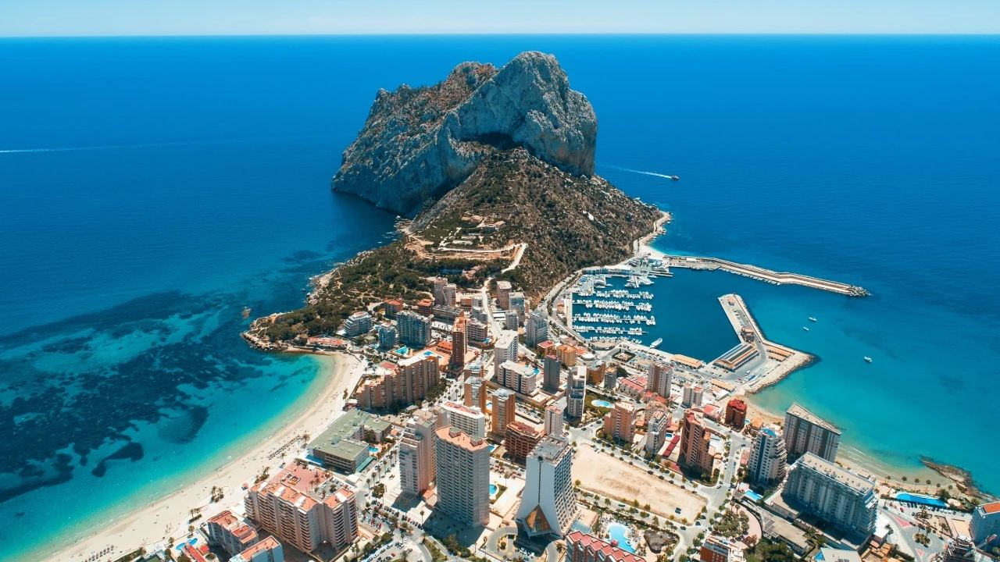
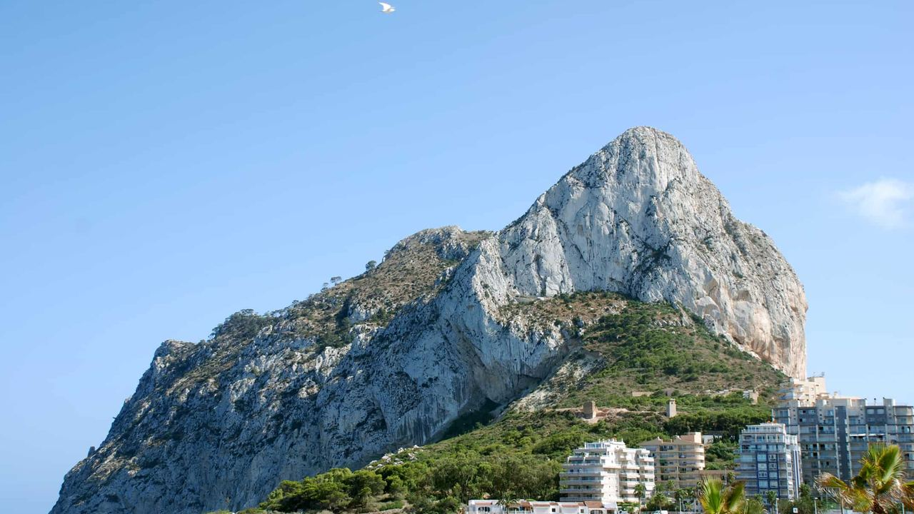
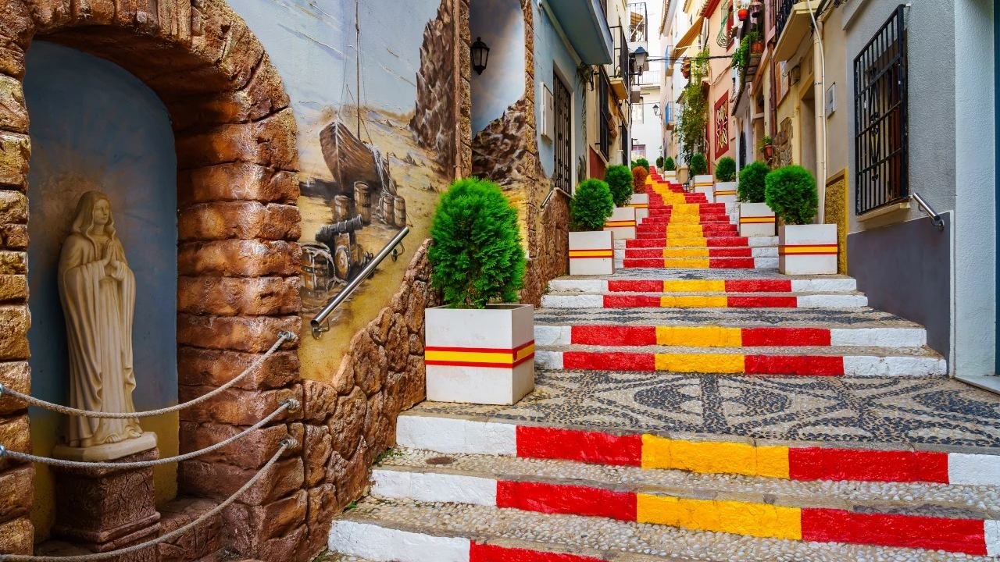
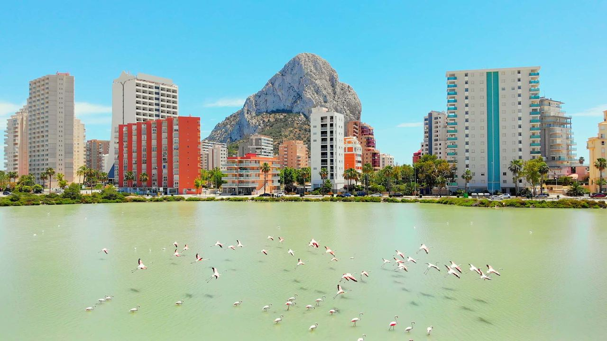
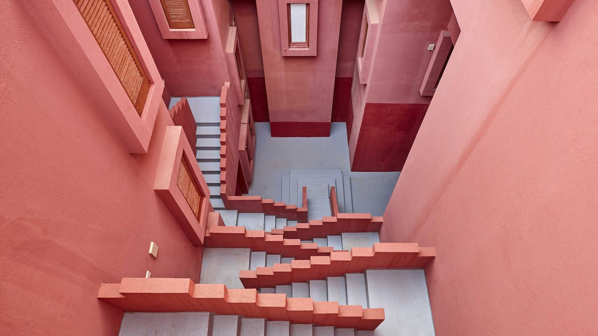
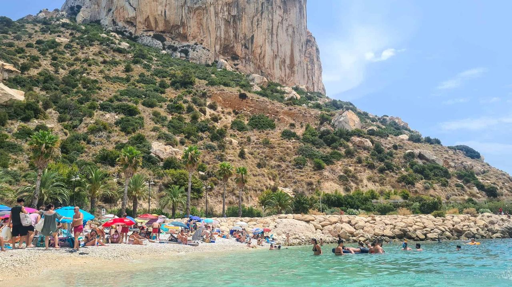
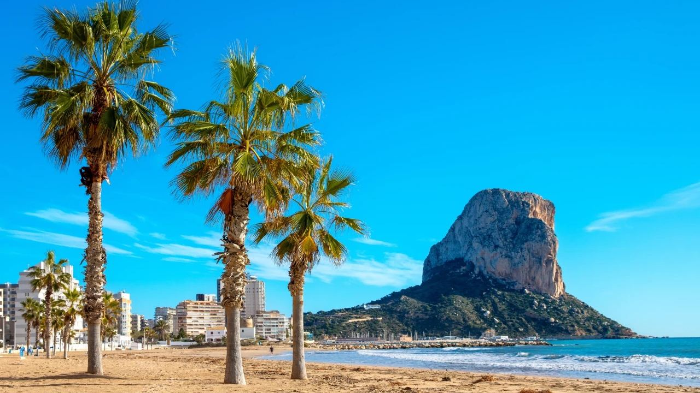
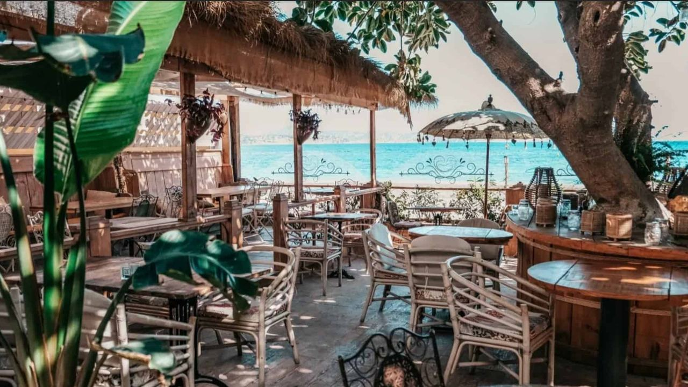

Places · Costa Blanca
Calpe: What to See and How to Spend a Perfect Day
 By Lucyna Gacek · · updated · 4 min read
By Lucyna Gacek · · updated · 4 min read

In short: Calpe (Calp) is a town of about 26,000 people in the north of the Costa Blanca, around 75 km from Alicante airport. Its symbol is the Peñón de Ifach, a 332 m rock that is now a natural park. The best things to see are the old town with its murals and the Torreó de la Peça, the Roman Baños de la Reina, the flamingos in Las Salinas, Ricardo Bofill's La Muralla Roja, the fish auction in the port and about 13 km of coast with sandy beaches (La Fossa, Arenal-Bol) and coves.
Few towns on the Costa Blanca have such a striking setting. Calpe sits on two bays divided by the Peñón de Ifach, with a salt lake behind and the mountains of the Sierra de Bernia inland. It is a real town all year, with a fishing port, schools, markets and a large international community, as well as a holiday resort.
Here is what to see, the best beaches, how to get there and a simple plan for one day.
The Peñón de Ifach

The 332 m limestone rock was declared a natural park in 1987 and is home to rare plants and nesting seabirds. A trail climbs from the visitor centre and through a short tunnel to the upper path. The climb to the summit is steep and rocky, so wear proper shoes and bring water. Access to the upper part is sometimes limited or closed for safety or nesting, so check the natural park's website before you go. From the top you can see the whole coast and, on very clear days, Ibiza.
The old town

On a small hill above the modern town, the old quarter has narrow streets, murals and a staircase painted in the colours of the Spanish flag. See the Torreó de la Peça, a defensive tower from the time of pirate raids, the remains of the old walls and the Iglesia Antigua, a small Gothic-Mudéjar church. The Archaeological Museum nearby explains Calpe's Iberian and Roman past.
Las Salinas and the flamingos

Right in the middle of town is an old salt lake where flamingos and other waterbirds feed for much of the year. A path runs around it, and the best light for photos is early morning or at sunset.
La Muralla Roja and the Baños de la Reina

On the cliffs of La Manzanera, La Muralla Roja (1973) by architect Ricardo Bofill is one of the most photographed buildings in Spain. It is a private residential building, so you can only see it from outside and from the coastal path. Down by the sea, the Baños de la Reina are Roman fish tanks cut into the rock, next to the remains of a Roman villa.
Beaches and coves

- La Fossa (Levante) – golden sand east of the Peñón, with a long, flat promenade.
- Arenal-Bol – the central beach, close to the old town, good for families.
- Cantal Roig – a small beach next to the port and the fish auction.
- Cala del Racó – a clear-water cove under the Peñón, good for snorkelling.
- Cala Calalga, Les Urques and La Manzanera – quieter rocky coves.
Read more in our guide to Costa Blanca beaches.
Weather and getting there

Calpe has mild winters, with daytime highs around 16–17 °C in January, and warm summers of about 30 °C in August. Alicante airport is about 75 km away, around 55 minutes by car on the AP-7. There are direct buses from the airport and from Alicante (about 1 hour 30 minutes), and the coastal TRAM line 9 runs from Benidorm to Dénia via Calpe. Valencia airport is about 1 hour 30 minutes by car.
A perfect day in Calpe

- Morning: walk the Peñón trail early, before the heat, or stroll around the salt lake to see the flamingos.
- Late morning: explore the old town, its murals and the Torreó de la Peça.
- Lunch: rice or fresh fish at one of the restaurants by the port.
- Afternoon: swim at La Fossa or Cala del Racó, then visit the Baños de la Reina.
- Around 5 pm on weekdays: watch the fish auction in the port from the visitors' gallery.
- Evening: sunset along the promenade, with the Peñón turning pink.
Living in Calpe
Calpe offers apartments with sea views close to the beaches, high-rise blocks with full services and quiet villas on the hillsides of Maryvilla, Gran Sol and the road towards Moraira. Find prices and areas in our Calpe property market guide and see our homes for sale in Calpe.
Frequently asked questions
Can you climb the Peñón de Ifach?
Yes. A marked trail climbs from the visitor centre, but the summit section is steep and rocky, and access is sometimes limited. Check the natural park's website before you go.
How far is Calpe from Alicante airport?
About 75 km, around 55 minutes by car on the AP-7. Direct buses take about 1 hour 30 minutes.
Can you visit La Muralla Roja?
Only from outside. It is a private residential building, but you can see it well from the street and the coastal path.
Is Calpe worth visiting in winter?
Yes. It is mild and sunny, quieter, and the flamingos are often in the salt lake.
Thinking of staying longer?
Many people who come to Calpe for a day end up coming back for good. If you would like a home near the Peñón, get in touch and we will help you compare the beach front, the old town and the hillside villas.
Sources: Calp Tourist Office · Generalitat Valenciana – Parc Natural del Penyal d'Ifac · AEMET – Spanish weather agency